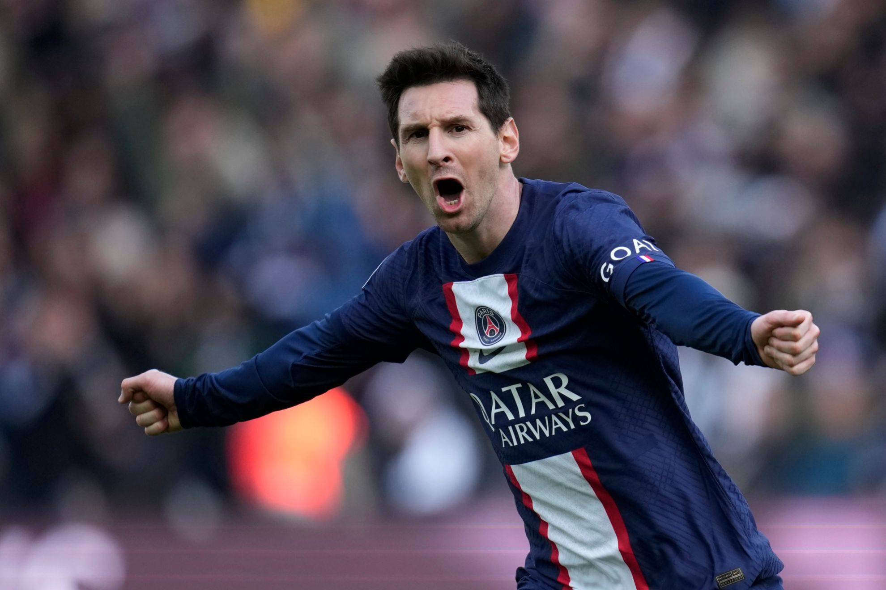

| Football Players |
Image |
Stats |
1.Messi |
 |
Total Club Appearances:Over 800 matches // Total Club Goals:Over 670 goals // For FC Barcelona (2004-2021):Appearances:Over 750 matches // Goals:Over 670 goals //
Assists: Over 250 assists// International Career (Argentina)Appearances:Over 150 matches // Goals: Over 70 goals
|
| 2.Ronaldo |
 |
Total Club Appearances: Over 900 matches // Total Club Goals: Over 700 goals // Sporting CP (2002-2003): Appearances: Around 30 matches // Goals: Around 5 goals // Manchester United (2003-2009):
Appearances: Over 200 matches // Goals: Over 110 goals // Real Madrid (2009-2018):Appearances: Over 400 matches // Goals: Over 450 goals // Juventus (2018-present):
Appearances: Over 100 matches // Goals: Over 70 goals (as of September 2021) // International Career (Portugal):Appearances: Over 175 matches // Goals: Over 110 goals |
| 3.Neymar |
 |
Total Club Appearances: Over 500 matches // Total Club Goals: Over 300 goals // Santos FC (2009-2013): Appearances: Over 200 matches // Goals: Over 100 goals //
FC Barcelona (2013-2017): Appearances: Over 100 matches // Goals: Over 100 goals // Paris Saint-Germain (2017-present): Appearances: Over 100 matches // Goals: Over 80 goals (as of September 2021) // International Career (Brazil):Appearances: Over 100 matches // Goals: Over 70 goals
|